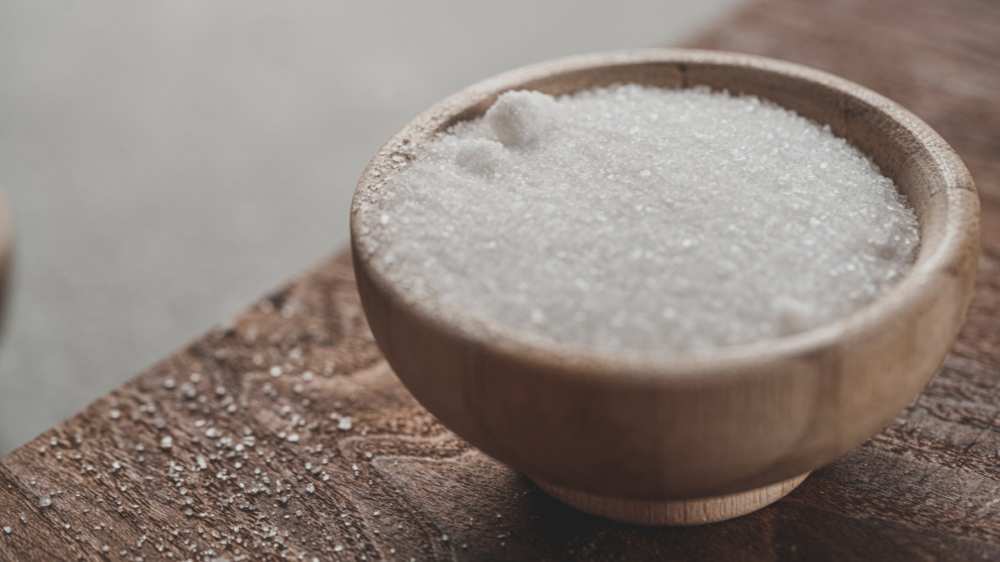
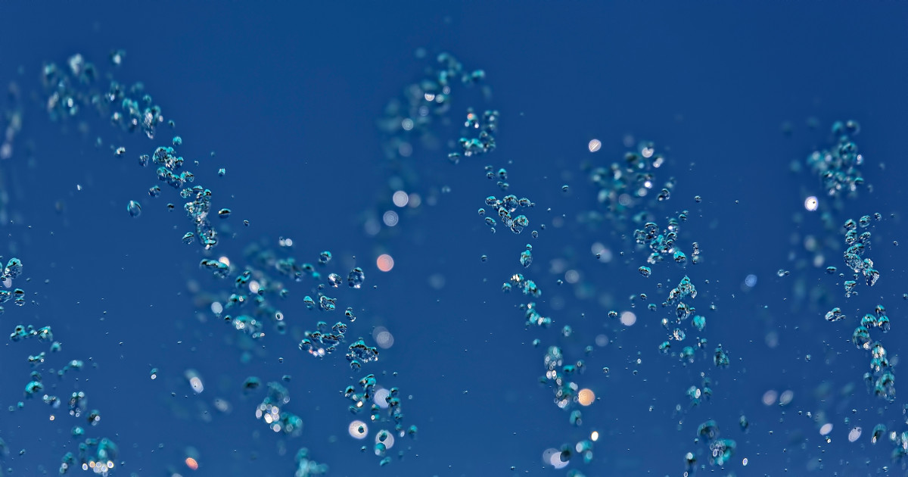

Higher frequency of adding salt to foods is associated with an increased risk for all-cause premature mortality, according to a study published online in the European Heart Journal.
A researcher "from Tulane University in New Orleans, and colleagues examined whether the frequency of adding salt to foods was associated with the risk for premature mortality and life expectancy among 501,379 participants from the UK Biobank"
 Photo by Faran Raufi on UnsplashSo what SALT are they talking about in this article? Thank you for using the word "MAY" in the title of this article because not only does this indicate that the researchers are not "SURE" if what they say is true, but this conclusion would be pretty bad news for the people that cook creole foods of New Orleans, Louisiana known for their spicy/salty cajun dishes.
Basic Physiology please save us from what "MIGHT" or "MAY" be bad news from this article. There
is SODIUM, POTASSIUM and IODINE. There is salt, salt and salt.
SODIUM is the molecule that helps your left ventricle, the main pumping and pressure chamber of
your heart move "BLOOD WITH PRESSURE" or what we call "Blood Pressure"
POTASSIUM is the molecule that helps the left ventricle either SLOW down its rate and/or help the ventricle to RELAX or what we call "Drop the pressure" AKA lower heart rate and blood pressure.
 Photo by Ricardo Gomez Angel on UnsplashIODINE is a mineral. "MINE" is the first word formed in the word mineral which indicates IODINE is best found in "mines" or natural sources. Iodine is necessary for proper thyroid function for which one of the duties for thyroid hormone is to actually form receptors on the HEART. Those receptors can help the heart beat at a normal rate, beat very slow or beat very fast. Think of a drummer having just 2 drumsticks versus 1 drumstick or 3 drumsticks where the drummer keeps a perfect beat, (2 sticks), too slow of a beat, (1 stick), or too fast of a beat, (3 drum sticks). These receptors formed on the heart by thyroid hormone interestingly enough are called "BETA" receptors. Think of it as "BETA" receptors = "the BEAT" of your heart.
So if a person consumes too much SODIUM in any form over long periods of time there is a risk you "MAY" harm your left ventricle by raising the VOLUME and PRESSURE AKA "Blood pressure" which could lead to problems. Remember to look at any food label and if that food contains NACL, (sodium chloride), that is TABLE SALT. A factory, not a MINE, brought that salt to your table in the form of a food.
KCL or potassium chloride is the forgotten SALT SUBSTITUTE, where potassium can help slow down and/or relax the main pumping chamber of your heart. Lowering the blood pressure and lowering the rate.
How much NACL or KCL could you or should you consume daily or annually based upon your current or anticipated health goals? Please for the love to preserve Cajun spicy cooking consult with a REGISTERED DIETICIAN before you start eating foods that taste like paper goods just to avoid the SALT.
Photo by Dr. Colin RossI am not a surfer because unlike a Dolphin or Shark I have feet but no fins. I can eat seaweed however or go hiking in the himalayan mountains. Sea Salt and Mineral based salts are the best source of NATURAL IODINE. Please for the love to preserve Cajun spicy cooking consult with a REGISTERED DIETICIAN to know how much SEA SALT, MINEral or SEAWEED you should consume. Just as all that is WEED is not good, all that is salt "MAY" not be that bad.